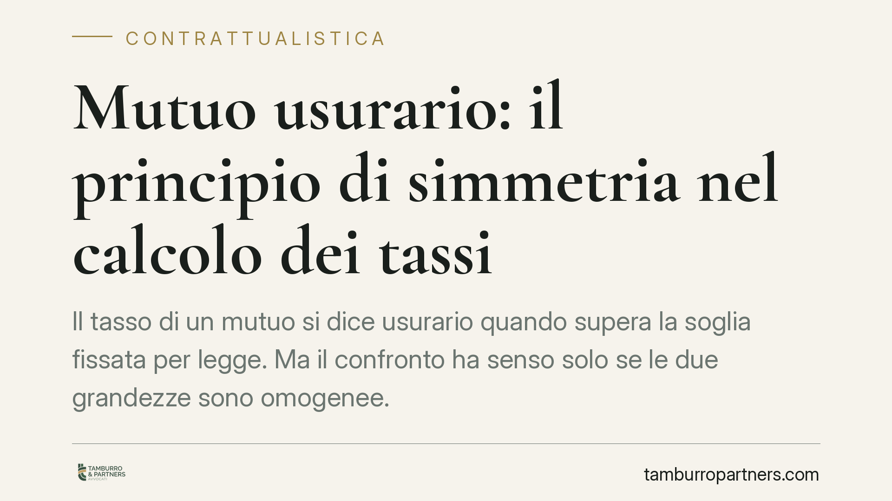

Mutuo usurario: il principio di simmetria nel calcolo dei tassi
Il tasso di un mutuo si dice usurario quando supera la soglia fissata per legge. Ma il confronto ha senso solo se le due grandezze sono omogenee. È il principio di simmetria: TEG contrattuale e tasso soglia vanno calcolati con la stessa metodologia. Un principio spesso ignorato nelle contestazioni, con esiti processuali penalizzanti per il mutuatario.

Il quadro normativo
La disciplina dell'usura ruota attorno a due riferimenti. La Legge 7 marzo 1996, n. 108 individua il meccanismo del cosiddetto "tasso soglia": il Ministero dell'Economia e delle Finanze, sulla base delle rilevazioni della Banca d'Italia, pubblica trimestralmente i Tassi Effettivi Globali Medi (TEGM) per categoria di operazione. Superata la soglia calcolata su quel valore medio, il tasso è usurario.
Sul piano civilistico interviene l'art. 1815, secondo comma, del Codice civile: se il tasso pattuito è usurario, la clausola sugli interessi è nulla e non sono dovuti interessi. La sanzione, dunque, è pesante: il mutuatario restituisce il solo capitale.
Il principio di simmetria
Il punto tecnico su cui si gioca la maggior parte delle controversie è il metodo di calcolo. Il TEG del singolo contratto (il tasso effettivo praticato) va confrontato con il tasso soglia. Ma questo confronto è corretto soltanto se le due grandezze sono costruite con la stessa formula e includendo le stesse componenti.
È il cosiddetto principio di simmetria (o omogeneità): non si possono confrontare valori determinati con metodologie diverse. Se il tasso soglia deriva da rilevazioni Banca d'Italia che escludono certe voci, il TEG contrattuale da comparare deve essere calcolato escludendo le medesime voci.
Tradotto: applicare al contratto una formula "artigianale" — che magari somma componenti non considerate nel TEGM — e poi confrontarla con la soglia ufficiale produce un raffronto tra grandezze disomogenee, viziato in radice.
Ammortamento alla francese e anatocismo
Il tema emerge con frequenza nelle contestazioni fondate sull'ammortamento alla francese, il piano a rata costante in cui la quota interessi è più alta all'inizio. Da tempo si sostiene che tale struttura celi un effetto anatocistico, cioè una capitalizzazione degli interessi che gonfierebbe il costo reale del mutuo oltre la soglia.
La giurisprudenza di legittimità ha però ridimensionato l'assunto. Il piano alla francese, di per sé, non genera anatocismo occulto: gli interessi di ciascuna rata sono calcolati sul capitale residuo e non sugli interessi già maturati. Costruire il TEG includendo un presunto effetto anatocistico, per poi confrontarlo con una soglia che quell'effetto non contempla, viola proprio il principio di simmetria.
Questo non significa che l'usura nei mutui non esista. Significa che va dimostrata con il metodo corretto, allineato a quello con cui la soglia è determinata.
Implicazioni pratiche
Per chi ha stipulato un mutuo, la conseguenza è concreta. Una contestazione impostata su calcoli disomogenei ha alte probabilità di essere respinta, con aggravio di costi di consulenza tecnica e spese di lite. La verifica dell'usura richiede una perizia econometrica seria, che ricostruisca il TEG secondo le Istruzioni della Banca d'Italia vigenti al momento della stipula.
Contano anche i tempi: va accertato se l'eventuale sforamento riguardi il momento della pattuizione (usura originaria) o una fase successiva (usura sopravvenuta), fattispecie quest'ultima trattata dalla giurisprudenza con criteri più restrittivi.
Per le banche, il messaggio è speculare: la robustezza delle clausole passa dalla corretta rappresentazione dell'ISC/TAEG e dalla coerenza con i parametri ufficiali.
Cosa fare in concreto
- Recuperate la documentazione completa: contratto, piano di ammortamento, prospetto ISC/TAEG e comunicazioni periodiche.
- Verificate il trimestre di riferimento: individuate il tasso soglia vigente alla data di stipula per la corretta categoria di operazione.
- Affidate il calcolo a un tecnico qualificato: pretendete una perizia che segua le Istruzioni Banca d'Italia e rispetti il principio di simmetria.
- Distinguete usura e anatocismo: sono contestazioni diverse, con presupposti e conseguenze distinte; non vanno confuse.
- Valutate la strategia prima del contenzioso: consigliamo un parere preliminare sulla sostenibilità della domanda, per evitare azioni destinate al rigetto.
Disclaimer
Contributo informativo a cura di Tamburro & Partners - Avv. Giuseppe Tamburro. Non costituisce parere legale.
Ogni contratto ha il suo equilibrio.
Se vuoi una revisione delle clausole o una redazione su misura, scrivi allo studio. Ti rispondiamo entro un giorno lavorativo.